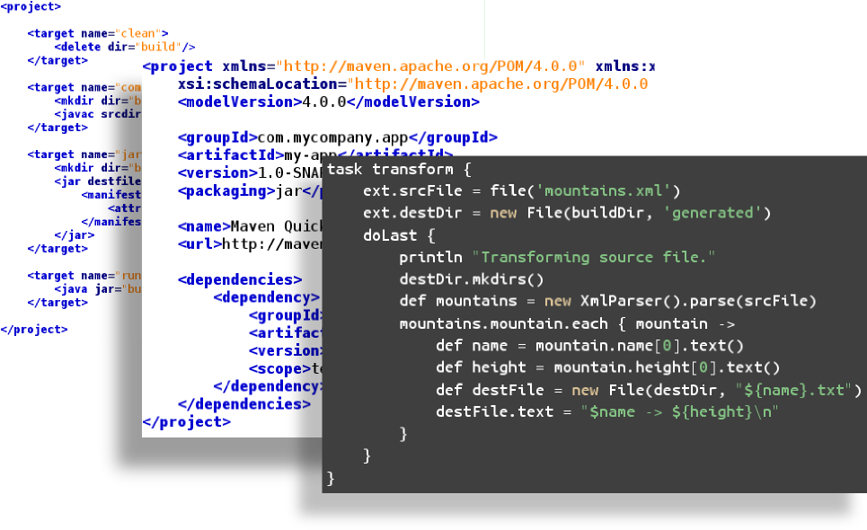
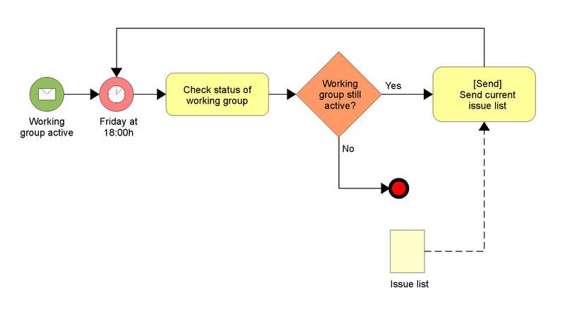
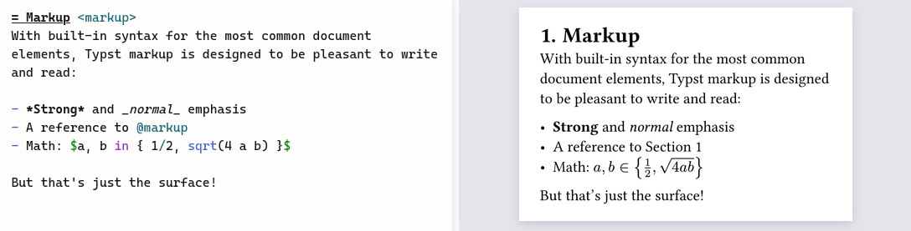
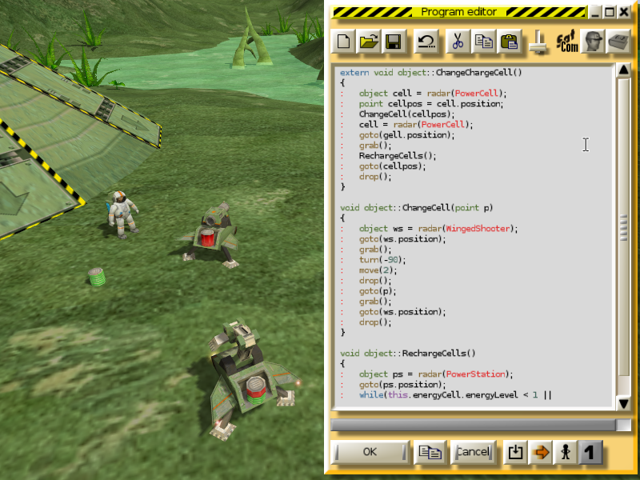
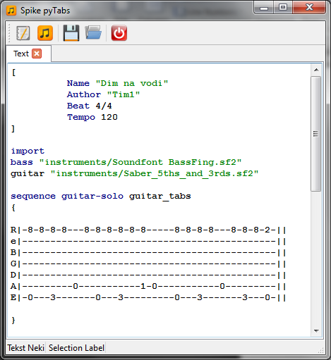
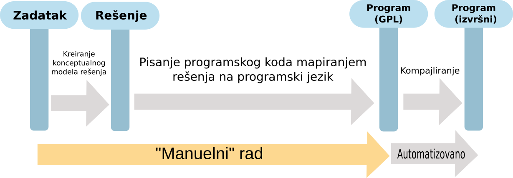
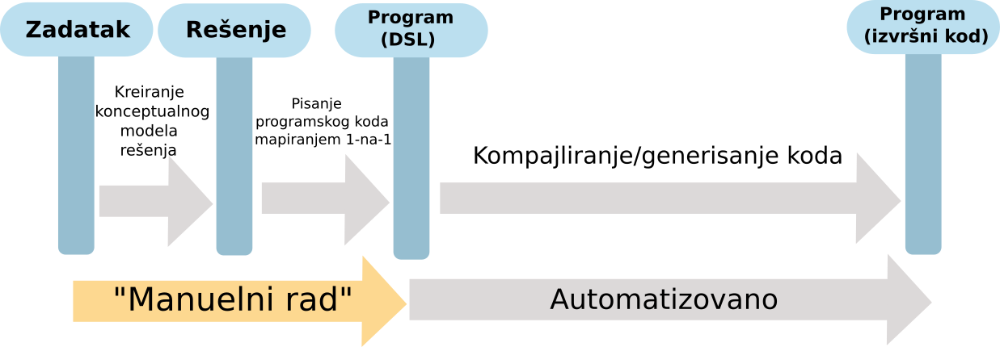

Израда језика у Пајтону
Језици специфични за домен (Domain Specific Languages)
Проф. др Игор Дејановић (igord на uns ac rs)
Креирано 2025-11-17 Mon 14:26, притисни ESC за мапу, Ctrl+Shift+F за претрагу, "?" за помоћ
1. Проблем и мотивација
1.1. Језици специфични за домен - ЈСД (Domain-Specific Languages - DSL)
- Језици специфични за домен (ЈСД, енг. Domain-Specific Languages - DSL) су језици прилагођени и ограничени на одређени домен проблема.
- За разлику од језика опште намене (ЈОН, енг. General Purpose Language - GPL), нуде повећање експресивности кроз употребу концепата и нотација прилагођених домену проблема и доменским експертима.
- Називају се још и мали језици (енг. little languages).
- Успешан ЈСД је фокусиран на узак, добро дефинисан домен и покрива га на одговарајући начин.
- Домен често има свој језик коришћен од стране доменских експерата иако не постоји његова имплементација на рачунару.
2. Примери
2.1. SQL
SELECT player, stadium
FROM game JOIN goal ON (id=matchid)
2.2. JPA мапирање
@Entity
@Table(name="COURSES")
public class Course {
private long courseId;
private String courseName;
public Course() {
}
public Course(String courseName) {
this.courseName = courseName;
}
@Id
@GeneratedValue
@Column(name="COURSE_ID")
public long getCourseId() {
return this.courseId;
}
}
2.3. Build језици (Ant/Maven/Gradle)

2.4. Пословни процеси - BPMN

2.5. OrgMode
Белешке, креирање садржаја, агенда, писмено програмирање (literate programming).
** PROJ
*** TODO Прегледати пријаву грешке #173
SCHEDULED: <2022-12-14 Wed>
1. [x] Неко парче кода:
#+begin_src rust
fn main() {
// Statements here are executed when the compiled binary is called
// Print text to the console
println!("Hello World!");
}
#+end_src
#+RESULTS:
: Hello World!
2. [ ] Нека друга забелешка...
*** WAIT Предати пројектни извештај
| Активност | Завршено | Проблеми |
|----------------+----------+------------------------|
| Прва активност | 30% | Нема |
| Друга актиност | 25% | Проблеми у снабдевању |
2.6. Typst
Припрема за штампу (typesetting).

2.7. Scratch
Учење програмирања за децу.

2.8. Inform
Inform је језик за креирање интерактивне фикције (текстуалних авантура) базиран на природном језику.
"Cactus Will Outlive Us All"
Death Valley is a room. Luckless Luke and Dead-Eye Pete are men in the Valley.
A cactus is in the Valley. Persuasion rule: persuasion succeeds.
A person has an action called death knell. The death knell of Luckless Luke is pulling the cactus.
The death knell of Dead-Eye Pete is Luke trying dropping the cactus.
Before an actor doing something:
repeat with the victim running through people in the location:
let the DK be the death knell of the victim;
if the DK is not waiting and the current action is the DK:
say "It looks as if [the DK] was the death knell for [the victim], who looks startled,
then nonexistent.";
now the victim is nowhere.
2.9. ChucK
Језик за креирање музике и синтезу звука у реалном времену.
// this synchronizes to period
.5::second => dur T;
T - (now % T) => now;
// construct the patch
SndBuf buf => Gain g => dac;
// read in the file
"kick.wav" => buf.read;
// set the gain
.5 => g.gain;
// time loop
while( true )
{
// set the play position to beginning
0 => buf.pos;
// randomize gain a bit
Math.random2f(.8,.9) => buf.gain;
// advance time
1::T => now;
}
2.10. GritQL
GritQL је ЈСД за претрагу, линтинг и трансформацију кода.
`console.log($log)` => . where {
$log <: not within `try { $_ } catch { $_ }`
}
2.11. Colobot
- Colobot је едукативна real-time стратегија.
- Играч програмира роботе у виртуелном окружењу ЈСД-ом налик на C++ и Javu.

2.12. PyTabs
Језик за гитарске таблатуре.

2.13. PyFlies
Језик за израду психолошких тестова.
3. Предности употребе
3.1. Утицај на продуктивност
- Поједине студије показују да повећање продуктивности иде и до 1000%1.
- Шта је основни разлог за повећање продуктивности?
3.2. Проблем менталног мапирања

3.3. Решење употребом ЈСД

3.4. Када језик сматрамо ЈСД-ом?
- Зависи од тога шта нам је домен.
- Језик може бити више или мање прилагођен неком домену.
- У екстремном случају и општи језик као што је Јава можемо сматрати ЈСД-ом ако нам је домен "развој софтвера". Наравно, иако тачно у теоријском смислу, у практичном губимо све предности ЈСД.
- Добар ЈСД покрива узак, добро дефинисан домен (домен проблема). Користи само концепте циљног домена, ограничен је на дати домен и самим тим је исказивање решења језгровитије и јасније доменским експертима.
- Чест је случај да језик настане као ЈСД али се временом прошири до те мере да га можемо сматрати ЈОН.